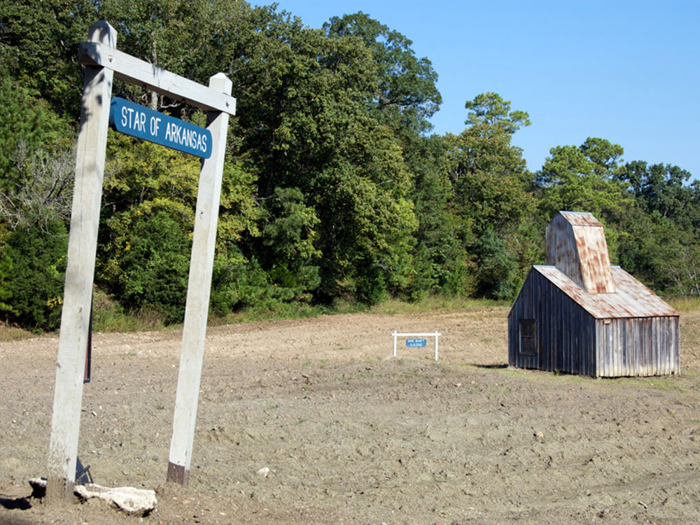

Lakeside recreation area offering world-class trout fishing, scenic river and reservoir views, wooded hiking trails, boating opportunities, and a modern visitor center overlooking a major dam.
Closed New Year's Day, Thanksgiving Day, Christmas Eve, and Christmas Day
Camping, lodging, boat rentals, and marina services available for additional fees
Mountain Home, AR (11 mi)
How to Get There
From Hampton Inn Mountain Home (about 12 mi): Take US-62 W toward Bull Shoals, follow AR-178 and signs to Bull Shoals Dam, then continue to Dam Overlook Lane to reach the visitor center entrance at Bull Shoals-White River State Park.
Overview
Bull Shoals-White River State Park is an Arkansas state park in the Ozark Highlands, set below the massive Bull Shoals Dam on the cold, clear White River. The park is best known for its trout fishing, and the tailwater below the dam is regarded as one of the premier rainbow and brown trout fisheries in the United States. It was created to provide public access to the river and lake, and today it is a popular base for anglers, campers, boaters, and hikers. The James A. Gaston Visitor Center offers views across the river valley, and the park also offers forest trails, a marina, and easy access to Bull Shoals Lake.
Access
The park is near the town of Bull Shoals in north-central Arkansas, about 2 miles from town and roughly 11 miles from Mountain Home. Nearly all visitors arrive by car, following US-62 and AR-178 to the Bull Shoals Dam area and the Dam Overlook Lane entrance. Branson, Missouri, is about 1.5 hours to the north, and Harrison is roughly an hour to the west. There is no public transportation to the park. Fishing licenses and a trout permit are required for anglers, so check Arkansas rules before you arrive.
Seasons
Trout fishing is good year-round, thanks to the steady cold water released from the dam. Spring and fall are the most pleasant times for hiking, with wildflowers and dogwoods in spring and colorful Ozark foliage in October. Summer brings hot, humid weather and the busiest season for boating, camping, and the marina. Winter is quiet and cold, but bald eagles can be spotted along the river and anglers still fish. Water levels on the White River can rise quickly when the dam generates power or releases water, so heed warnings and check the schedule before wading or boating. The visitor center is closed on a few major holidays.
Things to Do
Experience World-Class Trout Fishing
Bull Shoals-White River State Park is best known for its exceptional trout fishing opportunities along the cold, clear waters of the White River below Bull Shoals Dam. Anglers travel from across the country to fish for rainbow and brown trout in one of Arkansas's premier tailwater fisheries.
Visit the Bull Shoals Dam Overlooks
The park provides excellent views of Bull Shoals Dam and the surrounding Ozark Mountains. Visitors can learn about the river system, hydroelectric power generation, and the role the dam plays in flood control and recreation throughout the region.
Explore the White River
The White River offers opportunities for boating, kayaking, wildlife observation, photography, and relaxing along scenic riverbanks. The clear water and surrounding forested hills create one of the most picturesque landscapes in northern Arkansas.
Enjoy Bull Shoals Lake Recreation
Located where Bull Shoals Lake meets the White River, the park provides convenient access to one of the largest lakes in the Ozarks. Visitors can enjoy boating, fishing, sightseeing, and exploring countless coves and shorelines throughout the reservoir.
Visit the James A. Gaston Visitor Center
The visitor center features exhibits about the White River, Bull Shoals Dam, local wildlife, and the natural history of the Ozarks. It also serves as an excellent starting point for learning about the park's recreational opportunities.
Camp Along the River
The park offers well-developed campgrounds with access to the river, wooded surroundings, picnic areas, and modern amenities. Camping provides an ideal base for fishing, hiking, birdwatching, and exploring the Ozarks.
Watch Wildlife and Birds
The diverse habitats surrounding the park support numerous species of birds, deer, small mammals, and native Ozark wildlife. Birdwatchers often visit during spring and summer when migratory and nesting species are active.
Enjoy Scenic Picnicking and Photography
Beautiful views of the White River, Bull Shoals Lake, forested hills, and the dam provide excellent opportunities for photography, sightseeing, and family picnics throughout the year.
Top Trails
Big Bluff Trail
Length: Approximately 1.7 miles
Elevation Gain: Approximately 260 feet
Difficulty: Moderate
This popular trail follows portions of a historic route once used during construction of Bull Shoals Dam. Hikers enjoy views of the White River, Bull Shoals Dam, Ozark woodlands, streams, cedar glades, and panoramic overlooks from the bluff.
Bull Shoals Lakeside Trail
Length: Approximately 1 mile loop
Elevation Gain: Minimal
Difficulty: Easy
This scenic trail travels alongside a cove of Bull Shoals Lake and passes through several native Ozark habitats. Visitors can enjoy seasonal wildflowers, wildlife viewing, and peaceful lakeside scenery.
Oakridge Mountain Bike Trail
Length: Approximately 2 to 4 miles
Elevation Gain: Moderate to Strenuous
Difficulty: Moderate to Difficult
Designed primarily for mountain biking but also open to hikers, this multi-use trail travels through oak-hickory forests, meadows, creek crossings, and rolling Ozark terrain. The trail offers a more challenging outdoor experience within the park.
Heritage and Habitat Trail
Length: Approximately 0.6 miles
Elevation Gain: Minimal
Difficulty: Easy
This paved and accessible trail provides a short nature walk through the woods while highlighting local habitats and native plant communities. It is suitable for families and visitors seeking an easy outdoor experience.
Visitor Centers
The James A. Gaston Visitor Center sits above the dam and river and is the park’s main visitor facility. Exhibits cover the White River, Bull Shoals Dam, local wildlife, and the natural history of the Ozarks, and the building offers sweeping views of the river valley. Staff provide trail information, fishing advice, and help with camping and activities. It is open daily from 8am to 5pm, with a few holiday closures.
Camping and Lodging
The park has a developed campground along the river, with a full-service marina nearby. For other lodging, the town of Bull Shoals offers resorts, cabins, and fishing lodges along the White River, and Mountain Home, about 11 miles away, has chain hotels and restaurants. Flippin and Harrison, each within about an hour, provide more motels, and Corps of Engineers and private campgrounds ring Bull Shoals Lake.
Sources: Arkansas State Parks official information for Bull Shoals-White River State Park, including details on trout fishing, camping, marina access, visitor facilities, White River recreation, Bull Shoals Lake access, and the James A. Gaston Visitor Center.
Arkansas State Parks - Bull Shoals-White River State Park
Additional trail information verified through AllTrails, including Big Bluff Trail, Bull Shoals Lakeside Trail, Oakridge Mountain Bike Trail, and Heritage and Habitat Trail descriptions, lengths, and difficulty ratings.
AllTrails - Bull Shoals-White River State Park Trails
Additional hiking details verified through Ozarks Nature Guide and Explore the Ozarks trail resources covering park history, trail features, bluff overlooks, wildlife viewing opportunities, and Ozark habitats.
Ozarks Nature Guide
This article uses material from the Wikipedia articles and official tourism pages for Bull Shoals-White River State Park, which are released under the Creative Commons Attribution-Share-Alike License 3.0.
